> Evolución desde el croquis inicial hasta el render final
Diseño de edificio multifamiliar y comercial - Punta del Este, Uruguay
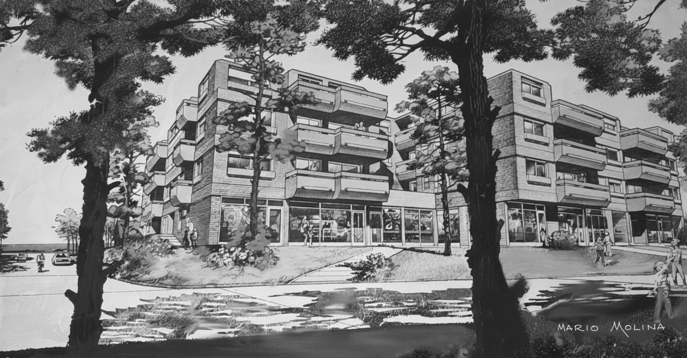
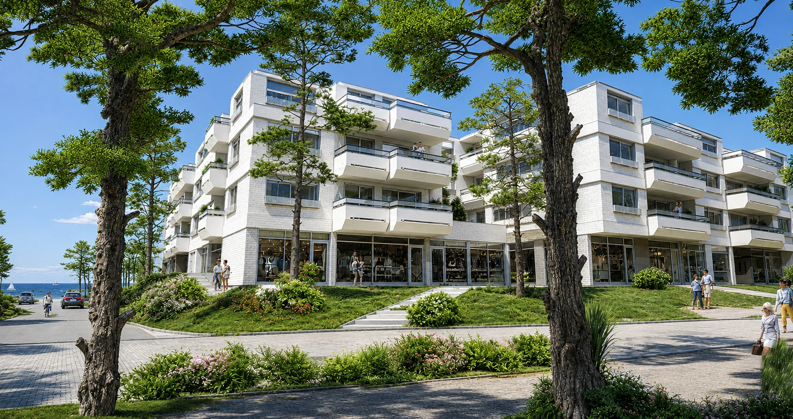
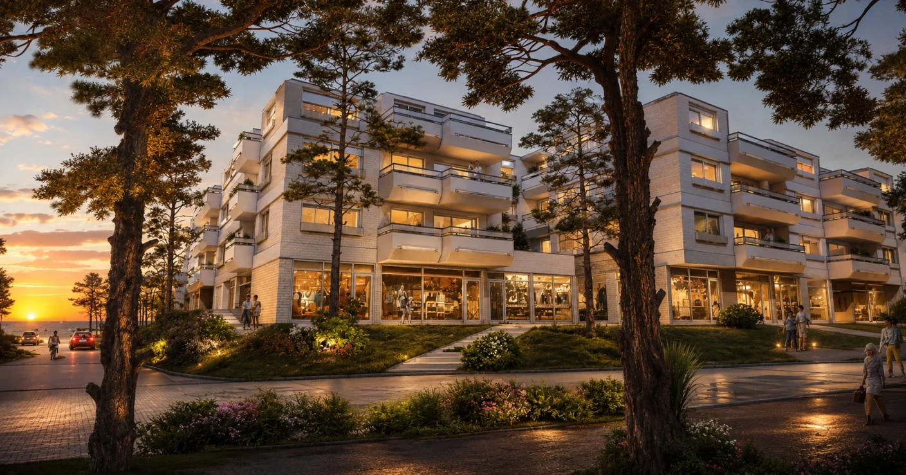
Diseño de Vivienda Unifamiliar - Casa Dufaur, San Isidro (BA)
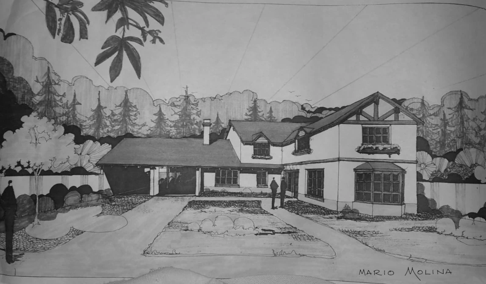
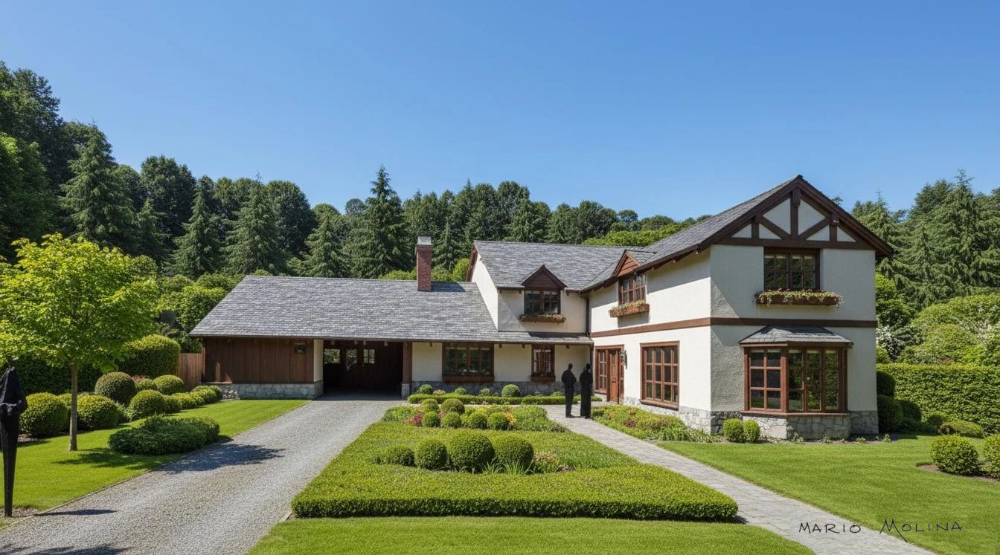
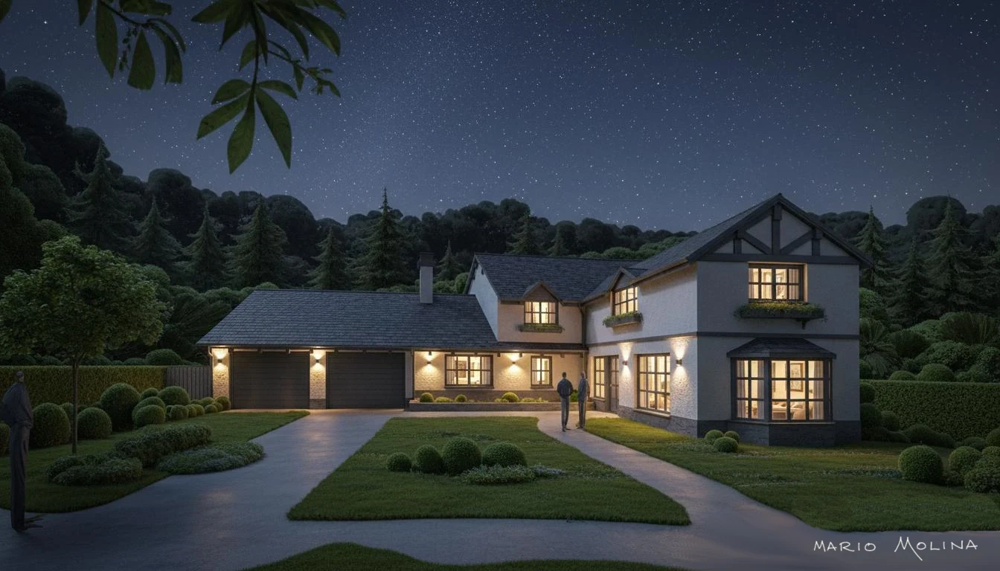
Diseño de vivienda unifamiliar - Casa Ayacucho, San Isidro (BA)
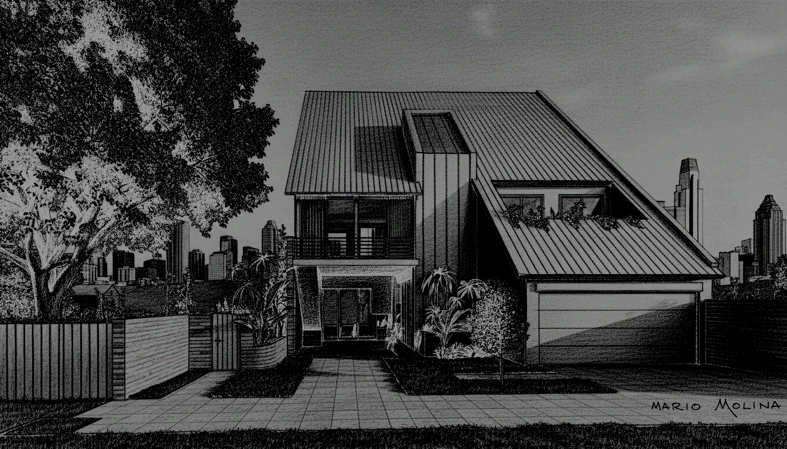
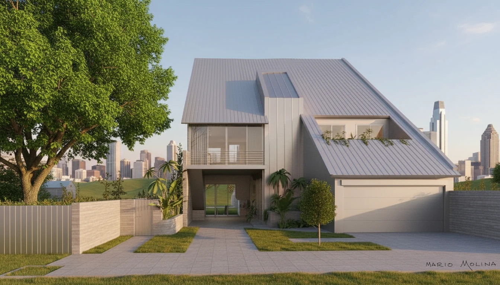
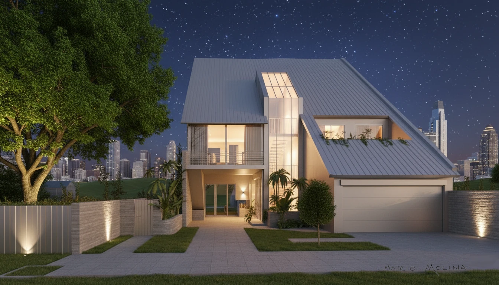
Diseño de vivienda unifamiliar - Casa Martinez, San Isidro (BA)
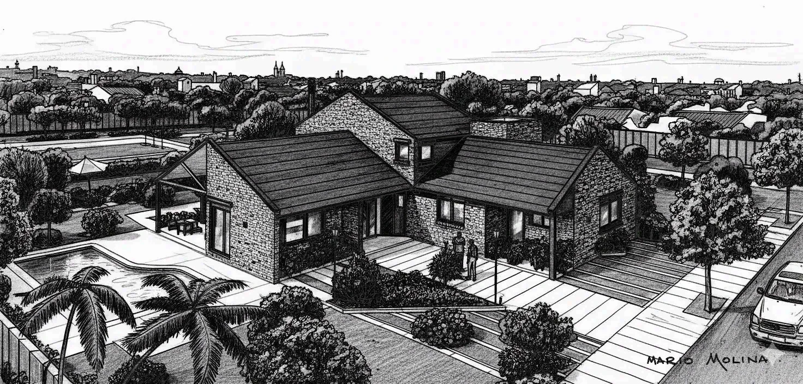
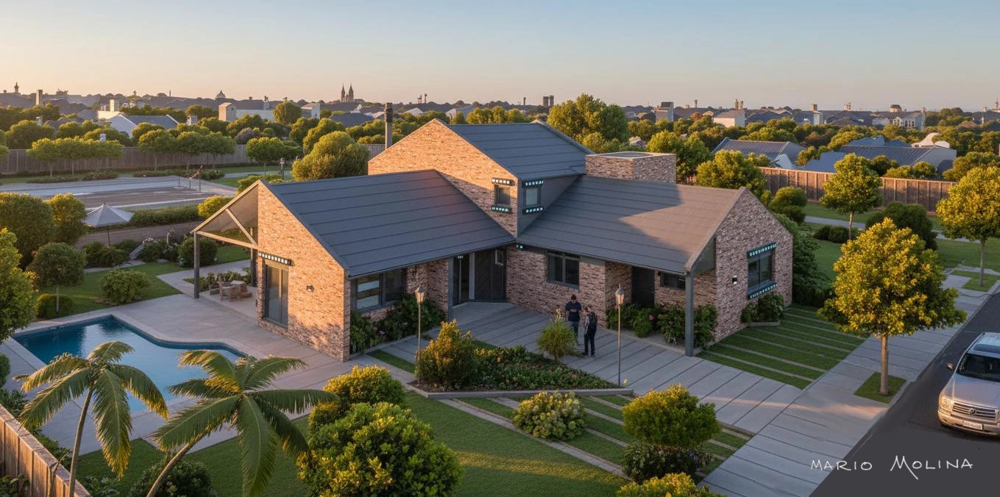
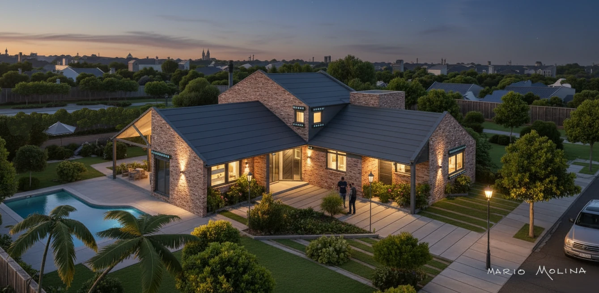